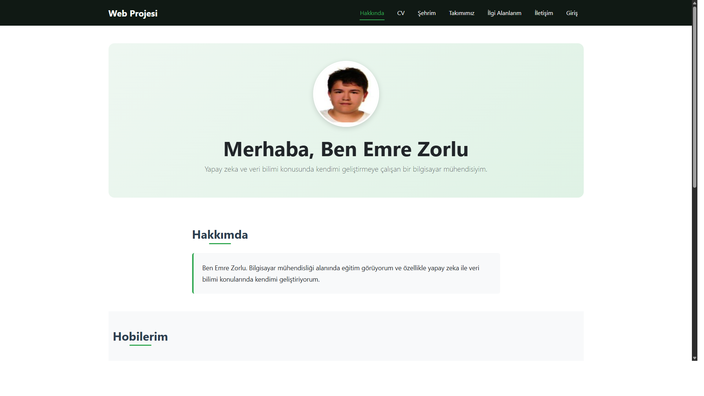
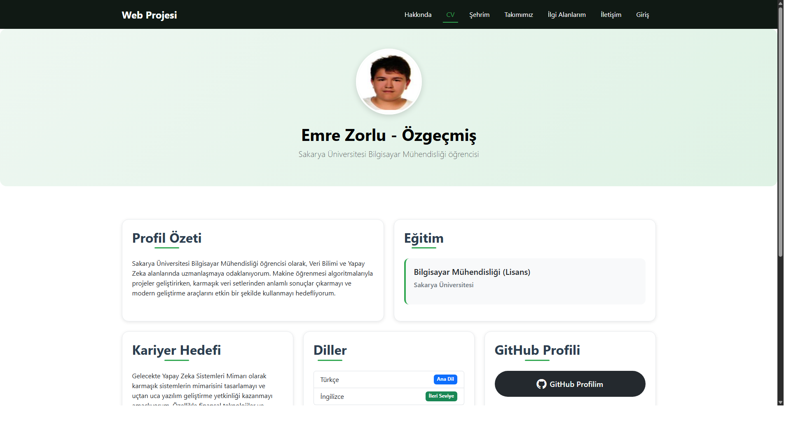
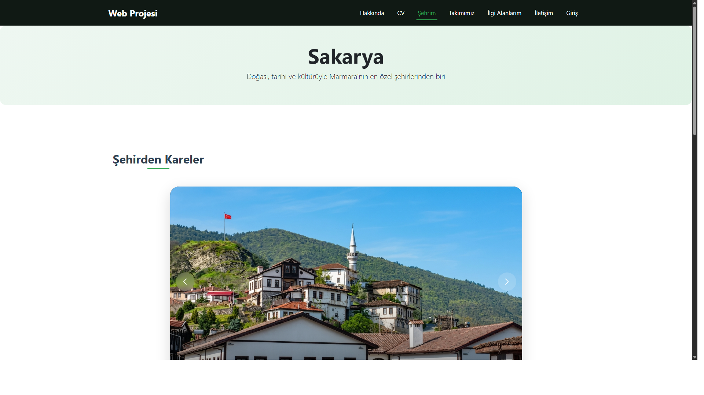
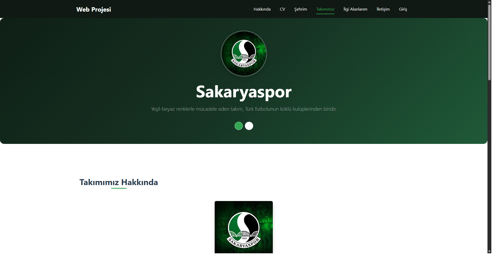
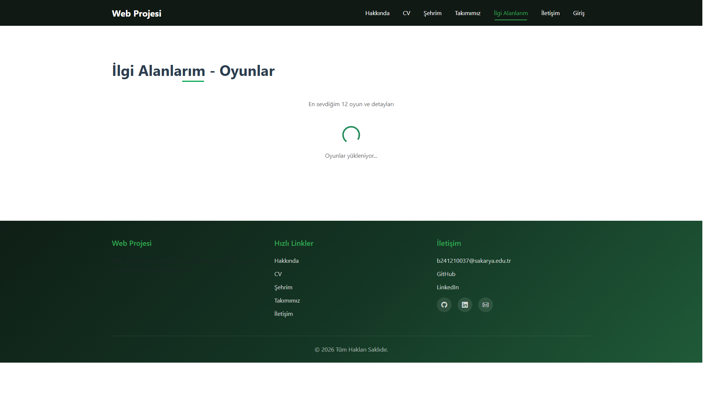
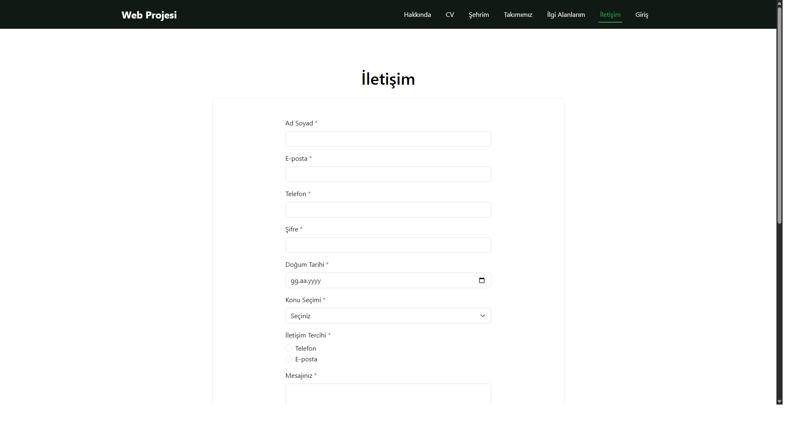
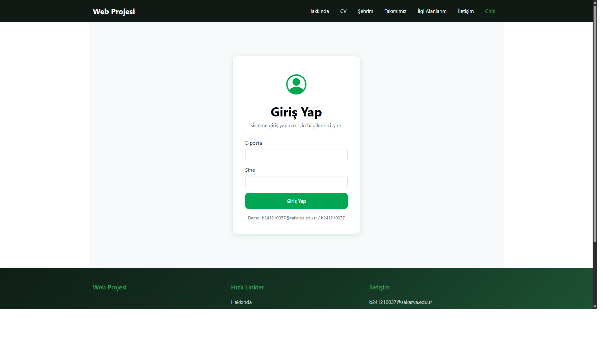

WEB TEKNOLOJILERI DERSI - PROJE RAPORU
1. PROJE AMACI
Dönem boyunca işlenen web standartları (Semantik HTML5, Responsive Design, JavaScript, PHP) kullanılarak; hem kişisel tanıtım hem de teknik becerileri sergileyen profesyonel bir web uygulaması geliştirmektir.
2. KULLANILAN TEKNOLOJILER
- HTML5: Semantik etiketler (header, section, article, nav, footer)
- CSS3: Harici stil dosyası (style.css - 1106 satır)
- Bootstrap 5.3.2: Responsive tasarım için
- JavaScript (ES6+): Form doğrulama, API entegrasyonu, slider
- Vue.js 3: İletişim formu için alternatif doğrulama
- PHP: Sunucu taraflı işlemler ve oturum yönetimi
- RAWG API: Oyun verilerini çekmek için ücretsiz API
3. SAYFA SAYFA INCELEME
3.1. Hakkında (Giriş) Sayfası - index.html
Açıklama: Site ziyaretçisini karşılayan ana sayfadır. Sayfa sahibi Emre Zorlu'yu tanıtan bilgiler içerir. Profil fotoğrafı, kişisel açıklama ve hobiler bölümü yer alır. Sayfanın alt kısmında sosyal medya bağlantıları (GitHub, LinkedIn, Kaggle) bulunur.
İçerikler:
- Hero bölümü: Profil fotoğrafı ve karşılama metni
- Hakkımda bölümü: Kısa kişisel açıklama
- Hobilerim: 4 kart halinde (Oyun Oynamak, Film İzlemek, Kitap Okumak, Kodlama Yapmak)
- Sosyal Platformlarım: GitHub, LinkedIn, Kaggle bağlantıları

3.2. Özgeçmiş (CV) Sayfası - cv.html
Açıklama: Eğitim bilgilerini içeren ve Semantic HTML5 etiketleri kullanılarak kurgulanmış özgeçmiş sayfasıdır. header, section, article etiketleriyle yapılandırılmıştır.
İçerikler:
- Profil fotoğrafı ve başlık
- Profil özeti: Sakarya Üniversitesi Bilgisayar Mühendisliği öğrencisi
- Eğitim bilgileri: Lisans derecesi
- Kariyer hedefi: Yapay Zeka Sistemleri Mimarisi
- Yabancı diller: Türkçe (Anadil), İngilizce (İleri Seviye)

3.3. Şehrim Sayfası - sehir.html
Açıklama: Sakarya şehrine ait tanıtıcı bilgilerin yer aldığı sayfadır. Şehrin nüfusu, gezilecek yerleri ve tarihi hakkında detaylı bilgiler içerir.
İçerikler:
- Özel Tasarım Slider: 4 resimden oluşan, tıklanabilir slider
- Önceki/Sonraki okları
- İlerleme çubuğu
- Küçük resim navigasyonu
- Otomatik oynatma (4 saniye aralık)
- Dokunma/kaydırma desteği
- Şehir hakkında detaylı metin (tarih, doğa, kültür)
- Bilgi kutusu: Yüzölçümü (4,895 km²), Nüfus (~1.1M), 16 ilçe
- Gezilecek yerler: Sapanca Gölü, Acarlar Longozu, Taraklı Evleri, Beş Köprü

3.4. Mirasımız / Takımımız Sayfası - takim.html
Açıklama: Sakarya'nın spor takımı olan Sakaryaspor'un HTML elemanlarıyla detaylandırıldığı sayfadır.
İçerikler:
- Takım logosu ve renkleri (Yeşil-Beyaz)
- Kuruluş yılı: 1965
- Stadyum: Sakarya Atatürk Stadyumu (Kapasite: 28,950)
- Lig: TFF 1. Lig
- Stadyum detay tablosu (isim, kapasite, konum, yüzey)
- Başarılar tablosu (Türkiye Kupası, Başbakanlık Kupası, Lig Şampiyonlukları)

3.5. İlgi Alanlarım (API Entegrasyonu) - ilgi.html
Açıklama: İnternet üzerinden bulunan ücretsiz RAWG API servisinden oyun verileri çekilerek site içinde gösterilmiştir. Döviz ve hava durumu API'leri kullanılmamıştır.
İçerikler:
- RAWG API entegrasyonu (https://api.rawg.io/api/games)
- Yükleme animasyonu (spinner)
- Hata mesajı görüntüleme
- 12 adet oyun kartı ile: Oyun kapağı, puanlama, çıkış tarihi, platformlar
- Oyunlar: The Witcher 3, Red Dead Redemption 2, God of War, Elden Ring, Cyberpunk 2077, GTA V, Minecraft, The Last of Us Part II, Half-Life, Dark Souls III, Portal 2, Sekiro

3.6. İletişim Sayfası - iletisim.html
Açıklama: Tüm form elemanlarını içeren iletişim sayfasıdır. Formun tüm elemanları kontrol edilmektedir.
Form Elemanları:
- Ad Soyad (text)
- E-posta (email)
- Telefon (telefon - otomatik format: (5XX) XXX XX XX)
- Şifre (password)
- Doğum Tarihi (date - maksimum bugünün tarihi)
- Konu Seçimi (select): Genel Bilgi, Teknik Destek, Öneri/Şikayet
- İletişim Tercihi (radio): Telefon, E-posta
- Mesaj (textarea)
- KVKK onay kutusu (checkbox)
Çift Doğrulama Sistemi:
- Native JavaScript Doğrulama (Buton: "Native JS Doğrula")
- Tüm alanların dolu olup olmadığı kontrolü
- E-posta formatı kontrolü
- Telefon: 10 rakam olmalı, 5 ile başlamalı
- Tarih kontrolü (gelecek tarih olamaz)
- Vue.js 3 Doğrulama (Buton: "Vue JS Doğrula")
- Vue.js framework kullanılarak alternatif doğrulama
- Aynı kurallar uygulanır

3.7. Login Sayfası - login.html
Açıklama: Uygulamanın güvenli giriş mekanizmasını test etmek için tasarlanan login sayfasıdır.
Giriş Bilgileri:
- Kullanıcı adı: b241210037@sakarya.edu.tr
- Şifre: b241210037
Özellikler:
- Native JavaScript ile boş alan ve e-posta formatı kontrolü
- Form POST ile php/login_islem.php'ye gönderilir
- Doğru giriş: "Hoşgeldiniz b241210037" mesajı (hosgeldin.php)
- Hatalı giriş: Hata mesajı ile login sayfasına yönlendirme
- Session yönetimi ile güvenli geçiş

3.8. Sunucu Tarafı İşlemleri (PHP)
login_islem.php:
- POST ile gelen e-posta ve şifre kontrolü
- Karşılaştırma: b241210037@sakarya.edu.tr / b241210037
- Başarılı ise session başlatılır ve hosgeldin.php'ye yönlendirilir
- Başarısız ise error parametresi ile login.html'ye dönülür
hosgeldin.php:
- Oturum kontrolü yapılır
- "Hoşgeldiniz b241210037" mesajı görüntülenir
- Başarı ikonu ve ana sayfaya dönüş linki

iletisim_islem.php:
- Tüm form verilerini POST ile alır
- Styled tablo ile düzenli şekilde ekrana yazdırır
- Güvenlik için htmlspecialchars() kullanılarak XSS koruması
- Konu ve tercih alanları insan okunabilir etiketlere dönüştürülür
4. TEKNIK ZORUNLULUKLAR KONTROLÜ
| Zorunluluk |
Durum |
Açıklama |
| Bootstrap/Tailwind ile responsive tasarım |
✅ |
Bootstrap 5.3.2 kullanıldı |
| Hazır tema kullanımı yok |
✅ |
Özel tasarım (style.css) |
| Login sistemi (öğrenci no formatı) |
✅ |
b241210037@sakarya.edu.tr / b241210037 |
| JavaScript ile boş alan ve e-posta kontrolü |
✅ |
main.js içinde doğrulama mevcut |
| Başarılı giriş mesajı |
✅ |
"Hoşgeldiniz b241210037" |
| İletişim formu tüm elemanları |
✅ |
text, email, tel, password, date, select, radio, checkbox, textarea |
| Çift doğrulama (Native JS + Framework) |
✅ |
Native JS ve Vue.js 3 ile iki buton |
| HTML5 required attr. tek başına değil |
✅ |
Ek JS doğrulaması yapıldı |
| Harici CSS dosyası |
✅ |
css/style.css (1106 satır) |
| Semantic HTML5 etiketleri |
✅ |
header, section, article, nav, footer |
| Slider (en az 4 resim, tıklanabilir) |
✅ |
Özel slider, 4 resim, tüm özellikler |
| API entegrasyonu (döviz/hava durumu hariç) |
✅ |
RAWG API - oyun verileri |
| PHP ile form işleme |
✅ |
iletisim_islem.php ve login_islem.php |
5. GIT KULLANIMI
Proje süreci boyunca farklı günlerde yapılan commit sayısı:
2026-05-05 gun12: Kodda iyileştirmeler yapıldı
2026-05-05 gun 12: kodda iyileştirmeler yapıldı
2026-05-05 gun 12: tasarim iyilesitrmeleri yapildi
2026-05-05 gun 12: hosgeldin sayfasi session ile dinamik hale getirildi
2026-05-04 gun 11.2: LinkedIn eklendi, encoding duzeltildi
2026-05-03 gun 10: rawg api ile oyun entegrasyonu tamamlandi
2026-05-02 gun 9: login sayfasi ve php giris kontrolu tamamlandi
2026-05-01 gun 8: vue dogrulama ve php form isleme tamamlandi
2026-04-30 gun 7: duzeltmeler ve iletisim formu tamamlandi
2026-04-29 gun 6: tasarim guncellemeleri ve genel duzeltmeler
2026-04-28 gun 5: miras sayfasi tamamlandi
2026-04-27 gun 4: sehir sayfasi tamamlandi
2026-04-26 gun 3: cv sayfasi tamamlandi
2026-04-25 gun 2: hakkinda sayfasi tamamlandi
Toplam Commit Sayısı: 14+ (Farklı günlerde, şart olan 10 adet sağlandı)
6. CANLI YAYIN (HOSTING)
7. PROJE DIZIN YAPISI
web-teknolojileri-8/
├── css/
│ └── style.css # Ana stil dosyası (1106 satır)
├── img/
│ ├── sehir/ # Şehir resimleri (4 adet)
│ ├── profil.png # Profil fotoğrafı
│ ├── sakaryaspor-forma.jpg
│ ├── sakaryaspor-logo.jpg
│ └── slider1.jpg
├── js/
│ └── main.js # Ana JavaScript dosyası (316 satır)
├── php/
│ ├── hosgeldin.php # Giriş başarılı sayfası
│ ├── iletisim_islem.php # İletişim formu işleyici
│ └── login_islem.php # Giriş kontrolü
├── index.html # Hakkında sayfası
├── cv.html # Özgeçmiş sayfası
├── sehir.html # Şehrim sayfası
├── takim.html # Takımımız sayfası
├── ilgi.html # İlgi Alanlarım (API)
├── iletisim.html # İletişim sayfası
├── login.html # Giriş sayfası
├── RAPOR.html # Bu rapor
└── RAPOR.md # Markdown versiyonu
8. SONUÇ
Proje, Web Teknolojileri dersi kapsamında belirtilen tüm teknik zorunlulukları karşılayacak şekilde tamamlanmıştır. HTML5, CSS3, JavaScript, Vue.js ve PHP teknolojileri kullanılarak; responsive, etkileşimli ve işlevsel bir web uygulaması geliştirilmiştir.
GitHub üzerinde proje süreci düzenli olarak paylaşılmış, farklı günlerde 10+ commit ile gelişim süreci belgelenmiştir. Canlı yayın InfinityFree üzerinden gerçekleştirilmiştir.
Rapor Tarihi: 6 Mayıs 2026
Hazırlayan: Emre Zorlu (b241210037)